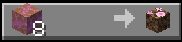
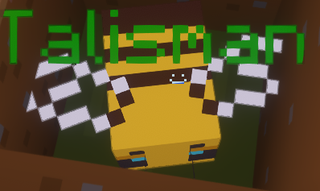

Talismans are items that you put in your off-hand for upgrades like more hearts, more attack damage, and sometimes even abilities! Every island has its own talisman, and they are mostly included when saying that you are maxed out on an island. Every talisman is hidden somewhere around the islands, and you need to find the shopkeeper to obtain it. Feel free to ask members or the staff team to help you find where a talisman is!
 